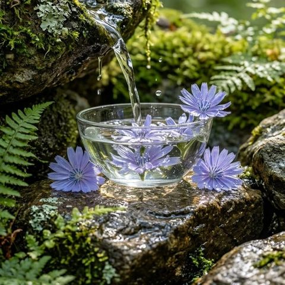
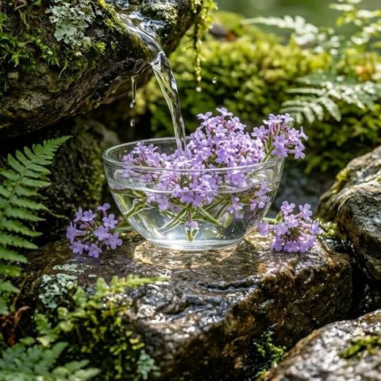
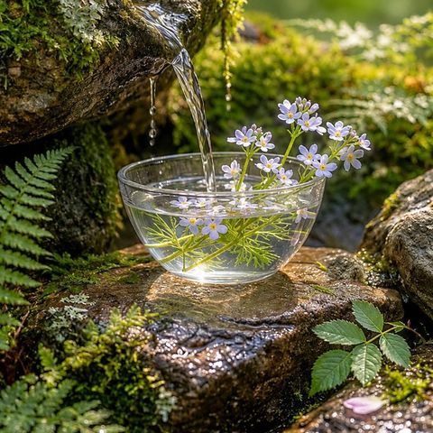
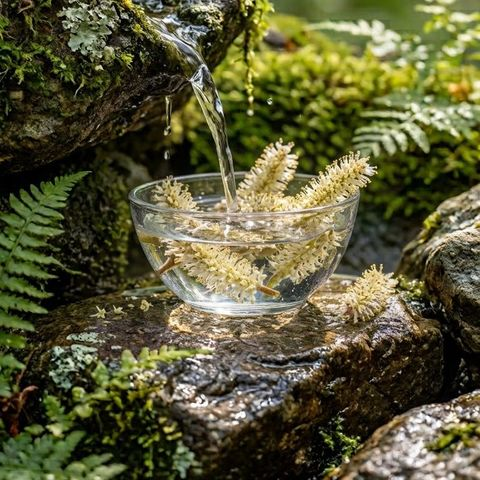
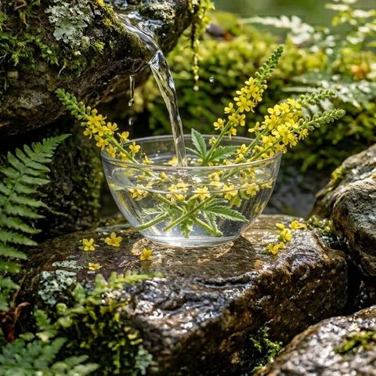
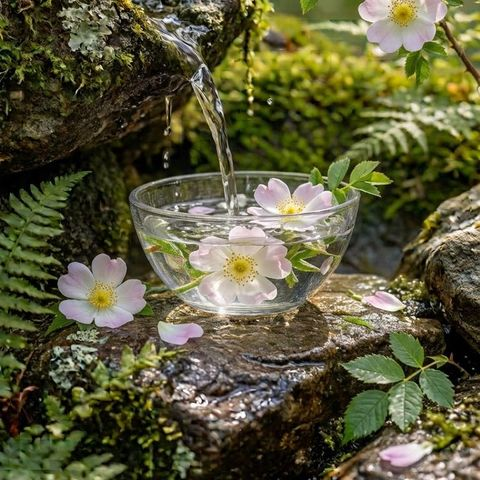

Bachblüten & Enneagramm

Neun Seelenblüten
Ihre App für die neun Blüten der neun Typen.
Welche Blüte spiegelt Ihr inneres Muster? Finden Sie Ihren Enneagrammtyp, lernen Sie die zugehörige Bachblüte kennen und lassen Sie sich täglich ein Stück weiter einladen.
App öffnenAuf dem Handy: im Browser öffnen, dann „Zum Home-Bildschirm“ wählen.
Die neun Blüten
Zu jedem Enneagrammtyp gehört eine Blüte, ein Leitgedanke und ein eigenes Kapitel.






Was die App bietet
Typ finden mit dem 60-Sekunden-Scan, dazu die Blüte Ihres Typs mit Steckbrief.
Pro Blüte sechs Teile als Auszug aus dem Buch: Einführung, Seelenstruktur, Fehlhaltung, Signatur, Erfahrung, Schlussbild.
„Wie fühle ich mich gerade?“ führt zur passenden Blüte.
Datum, Wetter, Gesundheitstipp und die Blüte des Tages.
„Weniger ist mehr“: Impulse brauchen Zeit.
Eigene Notizen auf dem Gerät. Blüten als Bild oder PDF an Freunde schicken.
Gratis und Vollversion
Von wem
Wichtiger Hinweis: Die Inhalte der App ersetzen keine ärztliche oder psychotherapeutische Diagnose oder Behandlung. Bei gesundheitlichen Beschwerden oder psychischen Problemen wenden Sie sich bitte an eine Ärztin, einen Arzt, eine Psychotherapeutin, einen Psychotherapeuten, einen Heilpraktiker oder eine sonstige qualifizierte Fachperson. Im Notfall rufen Sie den Notruf 112 oder den ärztlichen Bereitschaftsdienst 116 117 an. Die Texte sind Impulse zur Selbstreflexion und enthalten keine Heilversprechen. Eine Wirkung von Bachblüten ist naturwissenschaftlich nicht nachgewiesen.